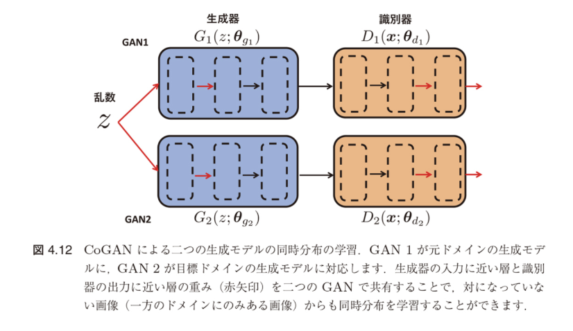

転移学習（Transfer Learning）
機械学習プロフェッショナルシリーズ
第4章 データに基づくドメイン適応の基礎
統合資料
2025年6月2日
第4章 統合目次
- 4.1 データに基づくドメイン適応の概要
- 4.2 事例ベースのドメイン適応
- 4.2.1 重要度重み付き学習
- 4.2.2 深層学習に基づく重要度重み付け
- 4.3 特徴ベースのドメイン適応
- 4.3.1 ドメイン不変特徴量の表現学習
- 4.3.2 非対称型の特徴ベースのドメイン適応
- 4.3.3 対称型の特徴ベースのドメイン適応
- 4.4 深層学習に基づく特徴ベースのドメイン適応
- 4.4.1 深層ニューラルネットワークによる表現学習の進化
- 4.4.2 中間層における分布マッチング
- 4.4.3 深層オートエンコーダに基づく表現学習
- 4.4.4 敵対的学習に基づく表現学習
- 4.5 不変性に基づく教師なしドメイン適応の限界
- 4.5.1 実験的な限界の示唆
- 4.5.2 不変性と同時リスクの関係
- 4.6 まとめ
4.1 データに基づくドメイン適応の概要
第4章で学ぶこと
異なるドメイン間でのデータ転移を可能にする
2つの基本的なアプローチを理解する
なぜドメイン適応が必要か？
訓練データ（元ドメイン）とテストデータ（目標ドメイン）の分布が異なる場合、通常の機械学習手法では性能が大幅に低下します。
ドメイン適応は、この分布の違いを考慮した学習を可能にします。
データに基づくドメイン適応とは？
事例ベース
元ドメインのデータを目標ドメインに転移
4章の構造
ゴール：予測モデルの学習に利用可能な統一されたデータ表現
同質的ドメインシフト
IWL, TrAdaBoost
異質的ドメインシフト
特徴の変換
TLRisk, ARC-t, MMDT, CDKPL
ドメイン適応手法の比較
同質的
元ドメインと目標ドメインの特徴空間が同じ
異質的
元ドメインと目標ドメインの特徴空間が異なる
| 手法 |
ドメインシフト |
何を転移するか |
元ドメイン |
目標ドメイン |
| IWL（4.2.1節） |
同質的 |
事例転移 |
ラベルあり |
ラベルなし |
| TrAdaBoost（4.2.2節） |
同質的 |
事例転移 |
ラベルあり |
ラベルあり |
| ［元ドメインの特徴を目標ドメインの特徴に変換するアプローチ］ |
| TLRisk（4.3.2.1節） |
異質的 |
特徴転移 |
ラベルあり |
ラベルあり |
| ARC-t（4.3.2.2節） |
異質的 |
特徴転移 |
ラベルあり |
ラベルあり |
| MMDT（4.3.2.3節） |
異質的 |
特徴転移 |
ラベルあり |
ラベルあり |
| CDKPL（4.3.2.4節） |
異質的 |
特徴転移 |
ラベルあり |
ラベルあり |
| ［両ドメインに共通の潜在因子を学習するアプローチ］ |
| aPLSA（4.3.3.1節） |
異質的 |
特徴転移 |
ラベルなし |
ラベルなし |
| HeMAP（4.3.3.1節） |
異質的 |
特徴転移 |
ラベルなし |
ラベルなし |
| ［両ドメインに共通の特徴量を学習するアプローチ］ |
| HMA（4.3.3.2節） |
異質的 |
特徴転移 |
ラベルあり |
ラベルあり |
| HFA（4.3.3.3節） |
異質的 |
特徴転移 |
ラベルあり |
ラベルあり |
| DIWL（4.4.2.2節） |
異質的 |
特徴転移 |
ラベルあり |
ラベルあり |
| ［オートエンコーダで両ドメインに共通の特徴量を表現学習するアプローチ］ |
| TLDA（4.4.3節） |
異質的 |
特徴転移 |
ラベルあり |
ラベルなし |
| MTAE（4.4.3節） |
異質的 |
特徴転移 |
ラベルなし |
ラベルなし |
| ［敵対的訓練で両ドメインに共通の特徴量を表現学習するアプローチ］ |
| CoGAN（4.4.4節） |
異質的 |
特徴転移 |
ラベルなし |
ラベルなし |
| DANN（4.4.4節） |
異質的 |
特徴転移 |
ラベルあり |
ラベルなし |
| WDIRL（4.4.4節） |
異質的 |
特徴転移 |
ラベルあり |
ラベルなし |
凡例：
- • 赤字：深層学習に基づく手法
- • ラベルあり：ラベル付きデータが必要
- • ラベルなし：ラベルなしデータで学習可能
4.2 事例ベースのドメイン適応
分布マッチング (Distribution Matching)
基本概念
- 空間上で両ドメインの特徴量の確率分布のマッチングを行う
- $\mathbb{D}_T \approx \mathbb{D}_S$ とできれば、変換後の元ドメインの特徴量は目標ドメインの特徴量と結合して予測モデルの学習に利用可能
実現方法
特徴ベースの方法
- 非対称型：元ドメイン特徴を目標ドメインに合わせる
- 対称型：両ドメインを共通の特徴空間に写像
共変量シフトの仮定
同質的ドメインシフト
仮定： $\mathcal{X}_T \times \mathcal{Y}_T = \mathcal{X}_S \times \mathcal{Y}_S$ かつ $P_{X,Y}^T \neq P_{X,Y}^S$ の設定を考え、転移仮定として共変量シフト
$P_{Y|X}^T = P_{Y|X}^S, \quad P_X^T \neq P_X^S$
を仮定します。
- 転移学習の目的は目標ドメインにおける期待リスク最小な仮説の学習
- 共変量シフトの仮定のもとでは、ある仮説 $h$ の目標ドメインにおける期待リスク $R_T(h)$ を元ドメインの重み付き期待リスクとして書くことができる
期待リスク(復習)
定義1.1（期待リスク）: データ $(\mathbf{X}, Y)$ の従う確率分布 $P_{X,Y}$ のもとでの仮説 $h$ の期待リスク $R(h)$ は、$h$ に対する損失 $\mathcal{L}$ の期待値
$R(h) := \mathbb{E}_{(\mathbf{X}, Y) \sim P_{X,Y}}[ \mathcal{L}(\mathbf{X}, Y; h)] = \mathbb{E}_{(\mathbf{X}, Y) \sim P_{X,Y}}[ \ell(h(\mathbf{X}), Y)]$
共変量シフト下での期待リスクの変形 (1/2)
期待リスクの書き換え
$R_T(h) = \mathbb{E}_{(\mathbf{x},y) \sim P_{X,Y}^T}[\ell(h(\mathbf{x}), y)]$
これを以下のように変形できます：
$R_T(h) = \int\int_{(\mathbf{x},y)} \ell(h(\mathbf{x}), y) p^T(\mathbf{x}, y) d(\mathbf{x}, y)$
期待値の定義に基づいて、確率密度関数を使った積分形式に書き換えています。
共変量シフト下での期待リスクの変形 (2/2)
確率密度の分解と変形
同時分布を条件付き分布と周辺分布に分解し、巧妙な1の掛け算を挿入：
$= \int\int_{(\mathbf{x},y)} \ell(h(\mathbf{x}), y) p^T(y|\mathbf{x}) p^T(\mathbf{x}) \frac{p^S(\mathbf{x})}{p^S(\mathbf{x})} d(\mathbf{x}, y)$
共変量シフトの仮定 $p^T(y|\mathbf{x}) = p^S(y|\mathbf{x})$ を使うと：
$= \int\int_{(\mathbf{x},y)} \ell(h(\mathbf{x}), y) p^S(y|\mathbf{x}) p^S(\mathbf{x}) \frac{p^T(\mathbf{x})}{p^S(\mathbf{x})} d(\mathbf{x}, y)$
ポイント
確率密度比 $\frac{p^T(\mathbf{x})}{p^S(\mathbf{x})}$ が自然に現れることに注目！
重要度重み付け
最終的な形式
$R_T(h) = \mathbb{E}_{(\mathbf{x},y) \sim P_{X,Y}^S} \left[ \frac{p^T(\mathbf{x})}{p^S(\mathbf{x})} \ell(h(\mathbf{x}), y) \right]$ (4.1)
ここで、3行目から4行目への式変形で共変量シフトの仮定を使っています。上式の最右辺は、目標ドメインと元ドメインの入力分布に関する確率密度比 $p^T(\mathbf{x})/p^S(\mathbf{x})$ で重み付けをした元ドメインの期待リスクになっていることがわかります。
結論： (4.1)を最小化する問題を解けば目標ドメインの仮説を学習することができる
4.2 まとめ
事例ベースのドメイン適応の要点
- 分布マッチング：元ドメインと目標ドメインの特徴量の確率分布を合わせる
- 共変量シフト：$P_{Y|X}^T = P_{Y|X}^S$ だが $P_X^T \neq P_X^S$
- 重要度重み付け：確率密度比 $p^T(\mathbf{x})/p^S(\mathbf{x})$ を使った重み付け学習
事例ベースの方法では、各データ点に適切な重みを付けることで、元ドメインのデータを使って目標ドメインの予測モデルを学習できます。この重みは両ドメインの入力分布の確率密度比として計算されます。
4.2.1 重要度重み付き学習
問題設定
基本的な仮定
- 密度比 $r(x) = p^T(x)/p^S(x)$ をデータから推定
- 元ドメインのデータ $\mathcal{D}_S = \{(x_i^S, y_i^S)\}_{i=1}^{n_S}$ を利用
目的：元ドメインごとに事例に対する重要度重み付けを学習し、目標ドメインの仮説を学習する
$$\frac{1}{n_S}\sum_{i=1}^{n_S} \hat{r}(x_i^S)\ell(h(x_i^S), y_i^S)$$
ここで、$\hat{r}(x)$ は推定された密度比
IWLの2段階学習アルゴリズム
Step 1: 密度比の推定
元ドメインと目標ドメインの入力データ $x_i^S, x_j^T$ から密度比の推定量 $\hat{r}(x)$ を学習
Step 2: 重み付き経験リスク最小化
Step1で学習した $\hat{r}(x)$ を用いて、重み付き経験リスク最小化問題を解く：
$$\min_{h \in \mathcal{H}} \frac{1}{n_S}\sum_{i=1}^{n_S} \hat{r}(x_i^S)\ell(h(x_i^S), y_i^S) + \Omega(h)$$
ここで、$\Omega(h)$ は仮説 $h$ に対する適当な正則化項
KLIERP法(復習)
1. カルバック・ライブラー重要度推定法（KLIEP）
- 目標ドメインの確率密度関数を密度比モデルを用いて $\hat{p}^T(x) = \hat{r}(x; \alpha)p^S(x)$ と表し、真の確率密度関数とのカルバック・ライブラーダイバージェンス
$D_{\mathrm{KL}}(p^T(x) \parallel \hat{p}^T(x)) = \int p^T(x) \log \frac{p^T(x)}{\hat{r}(x; \alpha)p^S(x)} dx$
を最小化して $\alpha$ を推定するカルバック・ライブラー重要度推定法（Kullback-Leibler importance estimation procedure, KLIEP）がある
- ここで、(2.7) の2行目の第1項はモデルパラメータを含んでいないため、最適化においては定数となることに注意
- よって、KLIEP の目的関数は第2項を観測データによって近似した
$\int p^T(x) \log \hat{r}(x; \alpha) dx \approx \frac{1}{n_T} \sum_{i=1}^{n_T} \log \hat{r}(x_i^T; \alpha)$ (2.8)
となる
uLSIF法(復習)
2. 制約なし最小二乗重要度適合法（uLSIF）
- 密度比推定のもう一つの主要なアプローチに制約なし最小二乗重要度適合法（unconstrained least-squares importance fitting, uLSIF）がある
- この方法では、密度比モデル $\hat{r}(x; \alpha)$ と真の密度比 $r(x)$ の二乗誤差
$\frac{1}{2} \int (\hat{r}(x; \alpha) - r(x))^2 p^S(x) dx$
$= \frac{1}{2} \int \hat{r}(x; \alpha)^2 p^S(x) dx - \int \hat{r}(x; \alpha) p^T(x) dx + \frac{1}{2} \int r(x) p^T(x) dx$ (2.9)
を直接最小化してパラメータ $\alpha$ を推定する
- (2.9) において、2行目の第3項はパラメータを含まないため最適化においては定数となっている
- したがって、第1項と第2項をそれぞれ観測データで近似した
$\frac{1}{2n_S} \sum_{i=1}^{n_S} \hat{r}(x_i^S; \alpha)^2 - \frac{1}{n_T} \sum_{i=1}^{n_T} \hat{r}(x_i^T; \alpha) + \frac{\lambda}{2} \|\alpha\|_2^2$ (2.10)
を最小化してパラメータを推定する
重要度重み付き学習（IWL）の特徴
主な特徴
- 目標ドメインのラベルデータは不要
- 重点サンプリングのアイデアに基づく
- 目標ドメインの事例に近い元ドメインの事例に大きな重みを与える
Point：
- 元ドメインのデータのみを使って目標ドメインの仮説を学習可能
- = 教師なしドメイン適応
応用範囲
- 重みは事例に対して付与される仮説 $h$ とは独立であるため汎用的
- = 線形モデルから多層ニューラルネットワークまで様々な機械学習モデルに適用可能
マルチソースドメイン適応への拡張
複数の元ドメインがある場合
$M$ 個の元ドメイン $\mathbb{D}_{S_1}, ..., \mathbb{D}_{S_M}$ がある場合の学習問題：
$$\min_{h \in \mathcal{H}} \sum_{m=1}^{M} \frac{\beta_m}{n_{S_m}} \sum_{i=1}^{n_{S_m}} \hat{r}(x_i^{S_m})\ell(h(x_i^{S_m}), y_i^{S_m}) + \Omega(h)$$
重みパラメータ：
$\boldsymbol{\beta} = (\beta_1, ..., \beta_M)^T$ は $\beta_m \geq 0$, $\sum_{m=1}^{M} \beta_m = 1$ を満たす
各元ドメイン $\mathbb{D}_{S_1}, ..., \mathbb{D}_{S_M}$ に対する重みを表す
ここで、$h_{S_m}$ を $m$ 番目の元ドメイン $\mathbb{D}_{S_m}$ を用いて推定された目標ドメインの仮説とする
ドメイン間の類似度に基づく重み付け
最適化問題
目標ドメインの入力データと元ドメインの予測の差が最小になるように $\boldsymbol{\beta}$ を決定：
$$\min_{\boldsymbol{\beta} \geq 0, \sum_m \beta_m = 1} \sum_{j=1}^{n_T} \left(\boldsymbol{y}_j^T \boldsymbol{\beta} - \boldsymbol{y}_j^T \boldsymbol{\beta}\right)^2 W_{ij}$$
類似度行列
- $W_{ij}$ は目標ドメインの入力 $x_i^T$ と $x_j^T$ の類似度行列 $W$ の $(i,j)$ 成分
- 類似度の計算：$W_{ij} = \exp\left\{-\frac{\|x_i^T - x_j^T\|^2}{2\sigma^2}\right\}$（ガウスカーネル）
最適化問題は二次計画問題であり、効率的に解くことができる
2段階重み付け法（2SW-MDA）
統合的なアプローチ
ここまで内容を"SW-MDA"と呼ぶ。
2-Stage Weighting framework for Multi-source Domain Adaptation (2SW-MDA)
- 元ドメインごとに事例に対する重要度重み付き学習（式4.3）により仮説を学習
- ドメインに対する重み付き学習（式4.4）により統合された仮説を学習
この枠組みにより、複数の元ドメインを効果的に活用して目標ドメインでの予測性能を向上させることができる
4.2.1から4.2.2への橋渡し
これまでに学んだこと
- 重要度重み付き学習（IWL）：確率密度比を直接推定
- 共変量シフトの下での期待リスクの変形
- 確率密度比 $p^T(\mathbf{x})/p^S(\mathbf{x})$ による重み付け
次に学ぶこと
転移アダブースト：重みを反復的に調整するアプローチ
仮説学習に悪影響を与える事例の重みを減らしていく方法
4.2.2 深層学習に基づく重要度重み付け
転移アダブーストとは
転移アダブースト (Transfer AdaBoost)
ブースティング手法のアダブースト (adaptive boosting, AdaBoost) を拡張した転移学習手法
特徴
- 仮説学習に悪影響を与える事例の重みを減らす
- 代表的な研究としてアンサンブル学習の一種であるブースティング手法を利用
- 2値分類問題 $\mathcal{Y} = \{-1, 1\}$ の場合を対象
重要度重み付き学習のように事例に対する重みパラメータを直接推定する以外に、重みを反復的に調整するアプローチがあります。
4.2.2.1 アダブースト
アダブーストとは
- 弱学習器と呼ばれる単体では予測精度のあまり高くない単純な仮説を多数組み合わせて、予測精度の高い仮説を生成する学習法
- 代表的な弱学習器として決定株 (decision stump) を使用
決定株: 深さ1の決定木
入力 $\mathbf{x} = (x_1, ..., x_d)$ に対して
$h(\mathbf{x}) = a \times \text{sign}(x_k - b)$
ここで、$a \in \{-1, 1\}$、$b \in \mathbb{R}$、$k \in \{1, ..., d\}$ はモデルパラメータ
アダブーストのアルゴリズム
通常のブースティングの学習
データ $\{(\mathbf{x}_i, y_i)\}_{i=1}^n$ に対して次の重み付き経験リスク最小化問題を考えます：
$\hat{R}_\beta(h) = \frac{1}{n} \sum_{i=1}^n \beta_i \ell(h(\mathbf{x}_i), y_i)$
アダブーストのアルゴリズム
Step1: (4.8)を最小化して弱学習器 $h_j$ を学習します。
$h_j = \text{argmin}_h \hat{R}_\beta(h)$
Step2: $h_j$ の信頼度 $\alpha_j$ を定めます。
Step3: $h$ を $h \leftarrow h + \alpha_j h_j$ で更新します。
Step4: 事例の重み $\beta$ を更新します。
重み $\beta = (\beta_1, ..., \beta_n)$ は各事例に対する重みであり、初期値はすべて $1/n$ とします。
アダブーストにおける重みの更新
弱学習器の重み $\alpha_j$ の決定
$\alpha_j \leftarrow \frac{1}{2} \log \frac{1 - \hat{R}_\beta(h_j)}{\hat{R}_\beta(h_j)}$
事例の重み $\beta_i$ の更新
$\beta_i \leftarrow \frac{\beta_i\exp\{-\alpha_j h(\mathbf{x}_i)y_i\}}{\sum_{i'=1}^n \beta_i \exp\{-\alpha_jh( \mathbf{x}_{i'})y_{i'}\}}$, $i = 1, ..., n$
- 弱学習器 $h_j$ の重み $\alpha_j$ は誤分類率 $\hat{R}_\beta(h_j)$ が小さいほど大きくなるように更新
- $h_j(\mathbf{x}_i)y_i > 0$ （正しく分類）のときは重み $\beta_i$ が小さくなる
- $h_j(\mathbf{x}_i)y_i < 0$ （誤分類）のときは重み $\beta_j$ が大きくなる
4.2.2.2 転移アダブースト
転移アダブーストの設定
- 目標ドメインと元ドメインでそれぞれラベルありデータ
- $\mathcal{D}_T = \{(\mathbf{x}_i^T, y_i^T)\}_{i=1}^{n_T}$: 目標ドメインのデータ
- $\mathcal{D}_S = \{(\mathbf{x}_i^S, y_i^S)\}_{i=1}^{n_S}$: 元ドメインのデータ
注意: 目標ドメインのデータ数 $n_T$ は元ドメインのデータ数 $n_S$ に比べて非常に小さいことを想定します。
転移アダブーストの特徴
- 目標ドメインと元ドメインの分布の違いによる影響を軽減
- 新しい重み付けの方法を採用
転移アダブーストのアルゴリズム
統合データ $\mathcal{D} = \mathcal{D}_T \cup \mathcal{D}_S$ を訓練データとし、弱学習器を訓練します。
重みベクトル $\beta = (\beta_1^S, ..., \beta_{n_S}^S, \beta_1^T, ..., \beta_{n_T}^T)$ とします。
Step1: $\mathcal{D}$ に対して (4.8) を最小化して弱学習器 $h_j$ を訓練します。
Step2: $h_j$ の目標ドメインのデータ $\mathcal{D}_T$ に対する誤差を
$\varepsilon_j = \sum_{i=1}^{n_T} \frac{\beta_i^T |h_j(\mathbf{x}_i^T) - y_i^T|}{\sum_{j=1}^{n_T} \beta_j^T}$
で計算します。
Step3: $h_j$ の信頼度 $\alpha_j$ を $\alpha_j \leftarrow \varepsilon_j/(1 - \varepsilon_j)$ で定めます。
また、$\alpha = 1/(1 + \sqrt{2\log \frac{n_S}{J}})$ とおきます。
Step4: 事例の重み $\beta$ を更新します。
転移アダブーストにおける重みの更新
重みの更新式
$\beta_i^S \leftarrow \beta_i^S \alpha^{|h_j(\mathbf{x}_i^S) - y_i^S|}$
$\beta_i^T \leftarrow \beta_i^T \alpha_j^{-|h_j(\mathbf{x}_i^T) - y_i^T|}$
最終的なアンサンブルモデル
最後に $h_1, ..., h_J$ を以下のように統合して、アンサンブルモデル $h$ を構成します：
$h(\mathbf{x}) = \begin{cases}
1 & \text{if } \prod_{j=\lceil J/2 \rceil}^J \alpha_j^{-h_j(\mathbf{x})} \geq \prod_{j=\lceil J/2 \rceil}^J \alpha_j^{-1/2} \\
0 & \text{otherwise}
\end{cases}$
- 各事例に対する重みは、弱学習器の目標ドメインのデータに対する誤差類率と個々の事例の分類結果に基づいて更新
- 誤分類された目標ドメインのデータは重みが大きくなるように、誤分類された元ドメインのデータは目標ドメインと関連が弱い事例とみなして重みが小さくなるように更新
転移アダブーストの特徴と拡張
転移アダブーストの利点
- アンサンブルモデル $h$ では、学習の前半の弱学習器は捨て、後半のものだけを用いて分類器が構成される
- 各事例の重みがある程度更新され、目標ドメインの分類に寄与する元ドメインの事例が相対的に大きな重みを持つようになる
- $h$ の性能を低下を防ぐ働きがある
マルチソース転移アダブースト
マルチソース転移アダブースト (multi-source TrAdaBoost, MsTrAdaBoost)
$M$ 個の元ドメイン $\mathbb{D}_{S_1}, ..., \mathbb{D}_{S_M}$ に対して、個々の元ドメイン $\mathbb{D}_{S_m}$ と目標ドメイン $\mathbb{D}_T$ の組ごとに通常の転移アダブーストの手順で弱学習器を訓練
誤差 $\varepsilon_j$ が最も小さくなる弱学習器を $h_j$ として転移アダブーストの Step3 と Step4 を実行します。
事例ベースから特徴ベースへ
これまで学んだ事例ベースの手法
✓ 重要度重み付き学習（IWL）
✓ 転移アダブースト（TrAdaBoost）
事例ベースの限界
- 同質的ドメインシフトのみに対応
- 特徴空間が同じである必要がある
特徴ベースの利点
特徴量の変換により、異質的ドメインシフトにも対応可能！
4.3 特徴ベースのドメイン適応
4.3.1 ドメイン不変特徴量の表現学習
4.3.1 ドメイン不変特徴量の表現学習
特徴ベースのドメイン適応の方法
- 特徴量を変換して目標ドメインと元ドメインを合わせるアプローチ
- 同質的ドメインシフトと異質的ドメインシフトのどちらの設定でも用いることができます
クロスドメインのテキスト分類問題の例
- 関連するドメインのラベルありデータを用いて目標ドメインでのテキスト分類器を学習
- 潜在トピックのようなドメイン間で共通する潜在的な特徴量を見つけることができれば、目標ドメインへの知識転移を円滑に行える
オリジナルの特徴量を変換して新たな特徴表現を作るアプローチは、データの性質や構造を保ったままドメイン間の不一致度を最小化し、元ドメインと目標ドメインに共通する特徴表現を見つけることを目的としています。
ドメイン不変特徴量とドメイン不変表現学習
ドメイン不変特徴量 (domain invariant features)
元ドメインと目標ドメインに共通する特徴表現
ドメイン不変表現学習 (domain invariant representation learning)
ドメイン不変特徴量を学習するための方法の一般的な呼称
ドメイン不変表現学習の実現方法
ドメイン不変表現学習は、以下の2ステップで実現することができます：
ドメイン不変表現学習の2ステップアプローチ
Step1: 目標ドメインのデータ $\mathcal{D}_T = \{(\mathbf{x}_i^T, y_i^T)\}_{i=1}^{n_T}$
と元ドメインのデータ $\mathcal{D}_S = \{(\mathbf{x}_i^S, y_i^S)\}_{i=1}^{n_S}$ をそれぞれ特徴抽出器 $h_F^T: \mathcal{X}_T \times \mathcal{Y}_T \rightarrow \mathcal{F} \times \mathcal{Y}$、
$h_F^S: \mathcal{X}_S \times \mathcal{Y}_S \rightarrow \mathcal{F} \times \mathcal{Y}$ によって共通の特徴空間 $\mathcal{F} \times \mathcal{Y}$ 上に写像し、これを $\mathcal{D}_{F,T} = \{f_i^T, \tilde{y}_i^T\}_{i=1}^{n_T}$、
$\mathcal{D}_{F,S} = \{f_i^S, \tilde{y}_i^S\}_{i=1}^{n_S}$ とおきます。すなわち、
$(f_i^T, \tilde{y}_i^T) = h_F^T(\mathbf{x}_i^T, y_i^T)$、$(f_i^S, \tilde{y}_i^S) = h_F^S(\mathbf{x}_i^S, y_i^S)$
です。ここで、$\mathcal{F}$ と $\mathcal{Y}$ はそれぞれ目標ドメインと元ドメインに共通の入力と出力の空間を表します。
Step2: 分布マッチングによって $\mathcal{D}_{F,T}$ と $\mathcal{D}_{F,S}$ の確率分布を合わせるように特徴変換を行います。特徴変換の指標としては、2.2.2節で導入したドメインの不一致度の最小化に基づくさまざまな方法が提案されています。
ドメイン不変表現学習のイメージ
図 4.2 Step1のイメージ
目標ドメイン
+印: ラベル +1
●印: ラベル -1
→
特徴抽出
←
特徴抽出
元ドメイン
+印: ラベル +1
●印: ラベル -1
異質的ドメインシフトでは元ドメインと目標ドメインでサンプル空間が異なるため、まず共通の潜在空間へ写像する表現学習を行い、同質的ドメインシフトの設定に変換した後で分布マッチングによって $\mathbb{D}_T \approx \mathbb{D}_S$ となるような表現学習が行われます。
直感的には、Step1 は異質的ドメインシフトを同質的ドメインシフトに変換するような表現学習を行っており（図 4.2）、Step2 は特徴空間 $\mathcal{F} \times \mathcal{Y}$ において同質的ドメインシフトの適当な転移仮定のもとで $\mathbb{D}_T \approx \mathbb{D}_S$ となるような表現学習を行っていると解釈することができます。
4.3.2 非対称型の特徴ベースのドメイン適応
非対称型の特徴ベースのドメイン適応
概要
- 元ドメインの特徴を目標ドメインの特徴に変換する写像を構成することで知識転移を行う
- そのためのいくつかの手法を紹介します
非対称型の特徴ベースのドメイン適応では、元ドメインの特徴を目標ドメインの特徴に変換する写像を構成することで知識転移を行います。本節では、そのためのいくつかの手法を紹介します。
4.3.2.1 リスク最小化による翻訳学習
画像識別タスクにおけるドメイン適応
- テキストデータ（元ドメイン）から画像データ（目標ドメイン）への知識転移
- テキストの特徴から画像の特徴への変換を学習する方法
リスク最小化による翻訳学習 (translated learning via risk minimization, TLRisk)
元ドメインと目標ドメインでそれぞれラベルありデータ集合が観測されている場合の手法
TLRiskの定式化
データ設定
- $D_S = \{(\mathbf{x}_i^S, y_i^S)\}_{i=1}^{n_S}$: 元ドメインのデータ
- $D_T = \{(\mathbf{x}_j^T, y_j^T)\}_{j=1}^{n_T}$: 目標ドメインのデータ
TLRiskの目的
それぞれのドメインの入力データから何らかの特徴抽出器を用いて獲得された特徴を $f^S$, $f^T$ で表すことにします。
TLRiskの目的は、$f^S$ から $f^T$ への確率的なドメイン翻訳器 $\phi(f^S, f^T) = p(f^T | f^S)$ を構成し、目標ドメインにおける分類器
$h_t(\mathbf{x}^T) = \text{argmin}_{y \in \mathcal{Y}} R(y, \mathbf{x}^T)$
を学習することです。
TLRiskにおける期待リスク
期待リスクの定式化
ここで、$R(y, \mathbf{x}^T)$ は以下で定義される期待リスクです：
$R(y, \mathbf{x}^T) \propto \mathbb{E}_{\theta_\mathcal{Y}|y}\mathbb{E}_{\theta_{\mathcal{X}_T}|\mathbf{x}^T}[\Delta(\theta_\mathcal{Y}, \theta_{\mathcal{X}_T})]$
記号の説明
- $\theta_\mathcal{Y}$, $\theta_{\mathcal{X}_T}$: それぞれラベルの生成モデル $p(\mathbf{y}|\theta_\mathcal{Y})$ と目標ドメインの入力の生成モデル $p(\mathbf{x}|\theta_{\mathcal{X}_T})$ のモデルパラメータ
- $\Delta(\theta_\mathcal{Y}, \theta_{\mathcal{X}_T})$: これらの関連度を表す尺度
$\Delta$ の具体例として、$\theta_\mathcal{Y}$ および $\theta_{\mathcal{X}_T}$ を目標ドメインの特徴の生成モデル $p(f^T | \theta_\mathcal{Y})$, $p(f^T | \theta_{\mathcal{X}_T})$ のモデルパラメータとみなし、KLダイバージェンス $D_{KL}(p(f^T | \theta_\mathcal{Y}) || p(f^T | \theta_{\mathcal{X}_T}))$ を利用する方法が提案されています。
パラメータの推定
パラメータ空間が大きいとき
(4.17) を直接計算することは難しいため、パラメータを最大事後確率推定 (maximum a posteriori estimation) した値
$\hat{\theta}_y = \text{argmax}_{\theta_\mathcal{Y}} p(\theta_\mathcal{Y}|y)$
$\hat{\theta}_{\mathbf{x}^T} = \text{argmax}_{\theta_{\mathcal{X}_T}} p(\theta_{\mathcal{X}_T}|\mathbf{x}^T)$
を用いて、以下のように近似します：
$R(y, \mathbf{x}^T) \approx \Delta(\hat{\theta}_y, \hat{\theta}_{\mathbf{x}^T})p(\hat{\theta}_y|y)p(\hat{\theta}_{\mathbf{x}^T}|\mathbf{x}^T) \propto \Delta(\hat{\theta}_y, \hat{\theta}_{\mathbf{x}^T})$
パラメータ推定の詳細 (1/2)
リスク関数の最小化
リスク関数として以下のKLダイバージェンスを最小化することで分類器 $h_t$ を学習します：
$\Delta(\hat{\theta}_y, \hat{\theta}_{\mathbf{x}^T}) = D_{KL}(p(f^T | \hat{\theta}_y) || p(f^T | \hat{\theta}_{\mathbf{x}^T}))$
推定のための仮定
パラメータ、観測データおよびその特徴に対して、以下のようなマルコフ性が成り立つと仮定：
$\theta_\mathcal{Y} \rightarrow y \rightarrow f^S \rightarrow f^T \rightarrow \mathbf{x}_j^T \rightarrow \theta_{\mathcal{X}_T}$
この連鎖は、ラベルから特徴へ、そして元ドメインから目標ドメインへの情報の流れを表しています。
パラメータ推定の詳細 (2/2)
条件付き確率の推定式
マルコフ性の仮定の下で、$p(f^T | \hat{\theta}_y)$ は次のように推定されます：
$p(f^T | \hat{\theta}_y) = \mathbb{E}_{f^S} \left[ \sum_{y'} p(f^T | f^S)p(f^S | y')p(y' | \hat{\theta}_y) \right] + \lambda \sum_{y'} p(f^T | y')p(y' | \hat{\theta}_y)$
推定式の2つの項
- 第1項：元ドメインの特徴を経由した間接的な推定
- 第2項：目標ドメインのラベルありデータからの直接的な推定
- $\lambda$：これらのバランスを制御するトレードオフパラメータ
推定式の解釈
推定式の構成要素
- $p(f^T | f^S)$: 元ドメインの特徴 $f^S$ から目標ドメインの特徴 $f^T$ への変換器
- $p(y' | \hat{\theta}_y)$: $y = y'$ のときに1、それ以外のときに0をとるディラック測度
- $\lambda$: 目標ドメインのラベルありデータの推定への影響をコントロールするトレードオフパラメータ
$p(f^S | y)$ および $p(f^T | y')$ は観測データから推定することができます。一方、$p(f^T | \hat{\theta}_{\mathbf{x}^T})$ は、
$p(f^T | \hat{\theta}_{\mathbf{x}^T}) = \mathbb{E}_{\mathbf{x}^{T'}} [p(f^T | \mathbf{x}^{T'})p(\mathbf{x}^{T'} | \hat{\theta}_{\mathbf{x}^T})]$
で推定されます。
同時確率の推定
簡略化のための仮定
ここで、$p(\mathbf{x}^{T'} | \hat{\theta}_{\mathbf{x}^T})$ は $\mathbf{x}^T = \mathbf{x}^{T'}$ のときに1、それ以外のときに0をとります。また、$p(f^T | \mathbf{x}^T)$ は目標ドメインの特徴抽出器を使って推定することができます。
以上で、$p(f^T, f^S)$ の学習法について説明します。$\phi(f^S, f^T)$ の学習方法について説明します。データから直接推定するためには、元ドメインの入力事例 $\mathbf{x}^S$ と目標ドメインの入力事例 $\mathbf{x}^T$ が与えられた下で条件付き独立であると仮定します。
$\phi(f^T, f^S) = p(f^T | f^S) = \frac{p(f^T, f^S)}{p(f^T) p(f^S) / p(f^T, f^S)}$
また、特徴間の同時確率 $p(f^T, f^S)$ がデータから直接推定できないため、...
他の同時確率推定方法
共起データを用いた推定
他の同時確率を使って推定することができます。例えば、元ドメインの入力事例と目標ドメインの特徴との間の共起 $p(f^T, \mathbf{x}^S)$ が得られている場合、$p(f^T, f^S) = p(f^T, \mathbf{x}^S)p(f^S | \mathbf{x}^S)\text{d}\mathbf{x}^S$ で両ドメインの特徴間の共起が推定されます。
このとき、$f^S$ と $f^T$ は入力 $\mathbf{x}$ が与えられた下で条件付き独立であると仮定しています。他の共起が得られている場合も同様です。
4.3.2.2 非対称正則化付きドメイン変換
TLRiskにおける学習の安定性
TLRiskにおける学習の安定性は、利用可能な共起データの質に依存します。
非対称正則化付きドメイン変換 (asymmetric regularized cross-domain transformation, ARC-t)
Kulis ら [164] は「両ドメインで同一のラベルを持つ事例は類似した特徴表現を持つはずである」という仮定の下で、ラベル情報から特徴の変換器を学習する方法を提案
ARC-tの学習問題
ARC-tの学習問題は以下のように定式化されます：
$\min_{W, \theta} \sum_{i,j} \ell((\mathbf{x}_i^S)^{\top} W \mathbf{x}_j^T) + \lambda \Omega(W)$
ARC-tの詳細説明
記号の説明
- $W$: パラメータ行列
- $\Omega$: 正則化項
- 損失関数 $\ell$: $\mathbf{x}_i^S$ と $\mathbf{x}_j^T$ が同一のラベルを持つ場合は $\ell((\mathbf{x}_i^S)^{\top} W \mathbf{x}_j^T) = (\max\{0, a - (\mathbf{x}_i^S)^{\top} W \mathbf{x}_j^T\})^2$
- 異なるラベルを持つ場合は $\ell((\mathbf{x}_i^S)^{\top} W \mathbf{x}_j^T) = (\max\{0, (\mathbf{x}_i^S)^{\top} W \mathbf{x}_j^T - b\})^2$ と定義
内積 $(\mathbf{x}_i^S)^{\top} W \mathbf{x}_j^T$ は変換 $W$ による元ドメインと目標ドメインの類似度を表しています。$a$ と $b$ は類似度が、$\mathbf{x}_i^S$ と $\mathbf{x}_j^T$ が同一ラベルの場合は大きく、異なるラベルの場合は小さくなるように調整するためのハイパーパラメータです。
ARC-tの最適化問題の解析
いま、$K_S = (X^S)^{\top} X^S$、$K_T = (X^T)^{\top} X^T$ とします。このとき、ARC-tの最適化問題 (4.23) に関して、以下の補題が成り立ちます：
補題 4.1
(4.23) の正則化項 $\Omega(W)$ が、$W$ の特異値 $\sigma_1, ..., \sigma_P$ によって $\Omega(W) = \sum_{p=1}^P \omega_p(\sigma_p)$ の形で書ける凸関数であるとします。ここで、各 $\omega_p$ は大域最小値が0であるような実数値関数です。このとき、ある $n_S \times n_T$ 行列 $L$ が存在して、(4.23) の最適解 $W^*$ は
$W^* = X^S K_S^{-1/2} L K_T^{-1/2} (X^T)^{\top}$
の形で書くことができます。
補題4.1から、任意の2点 $\mathbf{x}^S$, $\mathbf{x}^T$ に対する類似度 $(\mathbf{x}^S)^{\top} W\mathbf{x}^T$ は、$W$ を $X^S K_S^{-1/2} L K_T^{-1/2} (X^T)^{\top}$ で置き換えることでベクトルの内積のみで計算可能であることがわかります。
ARC-tの最適化問題の簡略化
定理 4.2
補題4.1の条件が成り立つとし、$W^*$ を (4.23) の最適解としましょう。このとき、$L^*$ が最適化問題
$\min_{L \in \mathbb{R}^{n_S \times n_T}} \ell(K_S^{1/2} L K_T^{1/2}) + \lambda \Omega(L)$
の最適解ならば、$W^* = X^S K_S^{-1/2} L^* K_T^{-1/2} (X^T)^{\top}$ が成り立ちます。
しかし、補題4.1は行列 $L$ の存在は保証しているものの、その構成方法については述べていません。$L$ の構成に関しては、次の定理が成り立ちます。
次元の呪いと最適化問題
計算量の課題
以上より、最適化問題 (4.23) を直接解くのではなく、最適化問題 (4.25) を解いて $L$ を求めることで、変換行列 $W$ を得られることがわかりました。
(4.23) の代わりに (4.25) を考察する利点は、最適化問題がデータの次元によらずに定まる点にあります。元の最適化問題 (4.23) では、データの次元の増加に伴って指数的に推定パラメータの数が増大します。一方で、最適化問題 (4.25) の変数 $L$ はデータのサンプルサイズのみに依存するため、データの次元の増加による影響は (4.23) に比べて軽微です。
*1 これは次元の呪い (curse of dimensionality) とも呼ばれます。
4.3.2.3 最大マージンドメイン変換
2ステップアプローチの背景
TLRiskやARC-tは、ドメインの翻訳器を学習した後でラベル規則に対する仮説を学習するという、2ステップの方法でした。
最大マージンドメイン変換 (max-margin domain transforms, MMDT)
Hoffman ら [133] は、これらを同時最適化するモデルを提案しています。
MMDTの学習問題
具体的には、ドメイン翻訳行列 $W$ と分類器のパラメータ $\theta$ をサポートベクトルマシン (support vector machine, SVM) 型の学習問題
$$\begin{aligned}
\min_{W, \theta} &\quad \frac{1}{2} \|W\|_F^2 + \frac{1}{2} \|\theta\|_2^2 \\
\text{subject to} &\quad y_i^S(\mathbf{x}_i^S)^{\top} \theta \geq 1, \quad i = 1, ..., n_S \\
&\quad y_j^T(\mathbf{x}_j^T)^{\top} W^{\top} \theta \geq 1, \quad j = 1, ..., n_T
\end{aligned}$$
で同時に最適化します。ただし、(4.26) はそのままでは実行可能解の存在が保証されません。
ソフトマージン制約への拡張
実行可能解を保証する問題の緩和
そこで、実際にはソフトマージン制約に緩和した以下の問題を解いてパラメータを推定します：
$$\begin{aligned}
\min_{W, \theta} \quad &\frac{1}{2} \|W\|_F^2 + \frac{1}{2} \|\theta\|_2^2 \\
&+ \lambda_1 \sum_{i=1}^{n_S} \max\{0, 1 - y_i^S(\mathbf{x}_i^S)^{\top} \theta\} \\
&+ \lambda_2 \sum_{j=1}^{n_T} \max\{0, 1 - y_j^T(\mathbf{x}_j^T)^{\top} W^{\top} \theta\}
\end{aligned}$$
(4.27) は (4.26) と同様に非凸最適化問題でありますが、データによらずに実行可能な問題となっています。
4.3.2.4 リンケージによるクロスドメイン知識伝播
ドメイン間の対応関係の活用
TLRiskではドメイン翻訳器の学習のためにドメイン間の対応関係の情報が要求されました。一方、ARC-tやMMDTではドメイン間の対応関係の情報は要求されませんが、目標ドメインにおいて教師ありデータが十分に利用可能であることが前提でした。
リンケージによるクロスドメイン知識伝播 (cross-domain knowledge propagation by linkages, CDKPL)
Qi ら [231] は、「そのとき利用可能な情報を適切に利用する」という、より柔軟なモデリングを提案
CDKPLの特徴
- ドメイン翻訳器 $T$ を、元ドメインの入力と目標ドメインの入力の組 $(\mathbf{x}^S, \mathbf{x}^T)$ に対して $\mathbf{x}^S$ と $\mathbf{x}^T$ の関連性の強さを表す実数値を対応させる関数 $T: \mathbb{R}^{d_S} \times \mathbb{R}^{d_T} \rightarrow \mathbb{R}$ として定義
- 両ドメインのデータに対して共通の潜在空間への射影
CDKPLにおける潜在空間への射影
射影の定式化
$\mathbf{x}_i^S \mapsto W^S \mathbf{x}_i^S, \quad \mathbf{x}_j^T \mapsto W^T \mathbf{x}_j^T$
を考えます。ここで、$W^S$、$W^T$ は、$d_c$ を潜在空間の次元としたとき、それぞれ $d_c \times n_S$、$d_c \times n_T$ 行列です。
ドメイン翻訳器の定義
このとき、ドメイン翻訳器 $T$ は、射影後の両ドメインの入力 $W^S \mathbf{x}_i^S$、$W^T \mathbf{x}_j^T$ に対する潜在空間上の内積
$T(\mathbf{x}_i^S, \mathbf{x}_j^T) = (W^S \mathbf{x}_i^S)^{\top} W^T \mathbf{x}_j^T = (\mathbf{x}_i^S)^{\top} \tilde{W} \mathbf{x}_j^T$
として実現できます。ここで、$\tilde{W} = (W^S)^{\top} W^T$ です。
定義から、$T$ を計算するためには、射影 $W^S$、$W^T$ を個別に学習する必要はなく、これらの積行列 $(W^S)^{\top} W^T$ を学習すれば十分であることがわかります。
CDKPLにおける予測器の学習
新たな目標ドメインの入力のラベル予測
また、新たな目標ドメインの入力 $\mathbf{x}^T$ のラベルは、$T$ と元ドメインのラベルありデータ $\{\mathbf{x}_i^S, y_i^S\}_{i=1}^{n_S}$ を用いて、
$\text{sign}(f(\mathbf{x}^T)) = \text{sign}\left(\sum_{i=1}^{n_S} y_i^S T(\mathbf{x}_i^S, \mathbf{x}^T)\right)$
で予測すると、予測器 $f$ は行列 $\tilde{W}$ を用いて
$f(\mathbf{x}^T) = \sum_{i=1}^{n_S} y_i^S (\mathbf{x}_i^S)^{\top} \tilde{W} \mathbf{x}_j^T$
と書くことができます。
以上の準備の下で、ドメイン翻訳器 $T$ を学習するための最適化問題は、以下のように定式化されます。
CDKPLの最適化問題
$\min_{\tilde{W} = (W^S)^{\top} W^T} \lambda_1 \sum_{j=1}^{n_T} \ell_1(y_j^T f(\mathbf{x}_j^T)) + \lambda_2 \sum_{i,j} \ell_2(c_{i,j} (\mathbf{x}_i^S)^{\top} \tilde{W} \mathbf{x}_j^T) + \|\tilde{W}\|_{\text{tr}}$
各項の説明
- 第1項: $\ell_1$ を損失関数＊2、$f$ を予測器としたときの目標ドメインにおけるラベル予測のための経験リスクを表しています
- 第2項: $\ell_2$ は単調減少関数、$c_{i,j}$ はTLRiskにおける同時確率 $p(\mathbf{x}_i^S, \mathbf{x}_j^T)$ のような $\mathbf{x}_i^S$ と $\mathbf{x}_j^T$ の共起の度合いを表すスコアです
- 第3項: $\|\tilde{W}\|_{\text{tr}} = \inf_{\tilde{W} = (W^S)^{\top} W^T} \frac{1}{2}(\|W^S\|_F^2 + \|W^T\|_F^2)$ で定義されるトレースノルム正則化項であり、$\tilde{W}$ に低ランク性を誘導します
$\lambda_1$, $\lambda_2$ はハイパーパラメータであり、目標ドメインのラベル情報と両ドメインの入力間の共起情報をそれぞれどの程度重視するかを制御する役割を持ちます。特に、$\lambda_1 = 0$ とすると共起情報のみでドメイン翻訳器 $T$ を学習することに相当します。同様に、$\lambda_2 = 0$ とするとラベル情報のみで $T$ を学習することに相当します。したがって、(4.32) の定式化はTLRisk、ARC-tやMMDTの設定を含むより一般的なものであるといえます。
＊2 特にマージン損失 (margin loss) と呼ばれる損失関数を使います。
4.3.3 対称型の特徴ベースのドメイン適応
4.3.3.1 潜在因子に基づく方法
因子分析（Factor Analysis）
- 観測変数とそれらの間の関係を少数の潜在因子（latent factor）で表現する統計手法
- ドメイン適応問題においては、元ドメインと目標ドメインでそれぞれ与えられた特徴表現から、両ドメインに共通する潜在因子を抽出
- 目標ドメインの特徴を元ドメインの知識を圧縮した潜在因子が存在する潜在空間に射影することで、特徴表現の質を向上させ各種タスクの性能を改善
以下では、因子分析に基づいたいくつかの対称型特徴ベースの手法を紹介します。
アノテーションに基づく確率的潜在的意味解析（aPLSA）
aPLSA (annotation-based probabilistic latent semantic analysis) [324]
- ラベルなしテキスト文書の大規模コーパスを元ドメインとして、目標ドメインである画像データのクラスタリングの性能向上を目標とする手法
- 画像とテキストという多視点（multi-view）データを利用
- 具体的には、Flickr *3 上のタグ付けされた画像データに対して、画像とタグの両方を潜在空間に射影
- その後、画像の低レベル特徴を決定付けている潜在因子をクラスタとして抽出
aPLSAのモデル
手法の流れを詳細に見ていきましょう。以下では、$\mathcal{Z} = \{z_t\}_{t=1}^T$ を潜在変数、$X^T$, $X^S$ をそれぞれ画像データと付随するタグ、$f$ を画像の低レベル特徴とします。
数学的には、このモデルの目標は各画像データ $x_j^T$ に対してある潜在因子 $z \in \mathcal{Z}$ を割り当てる確率的な対応
$g(x_j^T) = \arg\max_{z \in \mathcal{Z}} P(z | x_j^T)$ (4.33)
を学習することです。このとき、潜在因子 $z$ は $x_j^T$ が属するクラスタの代表点と解釈することができます。
aPLSAのグラフィカルモデル
図4.3 aPLSAのグラフィカルモデル。潜在変数 $Z$ は、画像データ $X^T$ とそれに付随するタグ $X^S$ の両方に依存して決まります。
$X^S$ → $Z$ ← $X^T$
↓
$f$
$P(z | x^S)$, $P(z | x^T)$, $P(f | z)$
aPLSAモデルの詳細
図4.3より、このモデルは画像 $x_j^T$ から潜在変数 $z$ を経由して特徴 $f$ を決定する項
$P(f | x_j^T) = \sum_{z \in \mathcal{Z}} P(f | z)P(z | x_j^T)$ (4.34)
と、タグ $x_i^S$ と特徴 $f^T$ との関係を潜在変数 $z$ で特徴付ける項
$P(f | x_i^S) = \sum_{z \in \mathcal{Z}} P(f | z)P(z | x_i^S)$ (4.35)
の二つから構成されていることがわかります。この二つの項を同時に考慮した尤度関数
$\mathcal{L} = \sum_t \left[ \lambda \sum_j \frac{A_{jt}}{\sum_k A_{jk}} \log P(f_t | x_j^T) + (1-\lambda) \sum_i \frac{B_{it}}{\sum_k B_{ik}} \log P(f_t | x_i^S) \right]$ (4.36)
をExpectation-Maximization (EM)アルゴリズムで最大化して、$P(f|z)$, $P(z | x_i^S)$, $P(z | x_j^T)$ を推定します。
異質的スペクトル写像
潜在因子を抽出するための方法
行列分解（matrix factorization）もよく用いられます。
Shiらによる異質的スペクトル写像（heterogeneous spectral mapping, HeMAP）[263]
- 行列分解によって元ドメインと目標ドメインに共通の潜在空間を学習する方法
- その学習問題は以下のように定式化されます：
$\min_{Z^S, Z^T} \mathcal{L}(Z^S, X^S) + \mathcal{L}(Z^T, X^T) + \mathcal{L}(Z^S, Z^T)$ (4.37)
ここで、第1項および第2項は各ドメインにおける再構成誤差 $\mathcal{L}(Z^r, X^r) = ||X^r - Z^rP^r||^2, r = S, T$ であり、潜在表現 $Z$ が元の特徴 $X$ の情報をできるだけ保持することを要請する損失関数です。
HeMAPの詳細
$P^S$, $P^T$ は射影行列を表しており、元の特徴 $X$ から潜在表現 $Z$ を抽出します。第3項は
$\mathcal{L}(Z^S, Z^T) = \frac{1}{2} \left( ||X^S - Z^T P^S||^2 + ||X^T - Z^S P^T||^2 \right)$
と定義され、「元ドメインの潜在表現 $Z^S$ と目標ドメインの潜在表現 $Z^T$ が似ている」という暗黙の仮定を実現するためのペナルティの役割を持ちます。
HeMAPの実行には、aPLSAのように元ドメインと目標ドメインの間で対応のあるデータが要求されることはありません。
しかし、転移の効果を十分高めるためには元ドメインと目標ドメインがよく似ていることが重要であり、事前に適当な指標でドメイン間類似度を検証しておくことが望ましいといえます。
4.3.3.2 多様体アラインメント
多様体アラインメント（manifold alignment）
- 「元ドメインと目標ドメインのデータが共通の多様体上に分布している」という多様体仮説（manifold assumption）に基づくアプローチ
- 両ドメインのデータをその幾何学的な構造を保つように共通の低次元多様体上に射影する
データの幾何学的な構造
- データ点の間の類似度として表現される
- 同じドメインに属するデータの間の類似度と、異なるドメインに属するデータの間の類似度の2種類が考えられます
- 前者の構造は、カーネル関数などを用いて入力の間の類似度を評価することで射影の前後で保存することは容易
- 後者の構造を保つためには、ラベル情報などによって両ドメインのデータの間に対応関係を付けておく必要があります
異質的な多様体アラインメント（HMA）
異質的な多様体アラインメント（heterogeneous manifold alignment, HMA）[303]
元ドメインと目標ドメインのデータをそれぞれ共通の次元の部分空間に移す写像 $f_S$ と $f_T$ を学習することが目標です。
このとき、ドメイン内の構造の保存は以下の式で表現されます。
$O_{\text{intra}} = \frac{1}{2} \mu \sum_{a \in \{S,T\}} \sum_{i,i'=1}^{n_a} ||f_a(x_i^a) - f_a(x_{i'}^a)||^2 W_a(i, i')$ (4.38)
ここで、$W_S(i, i')$ は元ドメインの事例 $x_i^S$ と $x_{i'}^S$ の間の類似度を表します。
HMAの詳細
例えば、$W_S(i, i') = e^{-||x_i^S - x_{i'}^S||^2}$ を用いることができます。
目標ドメインの類似度 $W_T$ についても同様です。また、$\mu$ は重みパラメータを表します。
ドメイン間の構造の保存
ドメイン間類似度：
- $W_s(i,j) = \begin{cases} 1 & x_i^S と x_j^T が同じラベルを持つ場合 \\ 0 & \text{otherwise} \end{cases}$
- 条件を入れ替えたドメイン間非類似度：
- $W_d(i,j) = \begin{cases} 1 & x_i^S と x_j^T が異なるラベルを持つ場合 \\ 0 & \text{otherwise} \end{cases}$
を用いて
$O_{\text{inter}}^c = \frac{1}{2} \sum_{a,b \in \{S,T\}} \sum_{i=1}^{n_a} \sum_{j=1}^{n_b} ||f_a(x_i^a) - f_b(x_j^b)||^2 W_c(i,j), \quad c = s, d$ (4.39)
で表現されます。
HMAの最適化
直感的には、元ドメインと目標ドメインで同じラベルを持つ力は近くに、異なるラベルを持つ力は離れるように射影されることを要請する定式化になっています。
以上の準備の下で、射影 $f_S$, $f_T$ を学習するための損失関数は以下で定義されます。
$O(f_S, f_T) = \frac{O_{\text{inter}}^s + O_{\text{intra}}}{O_{\text{inter}}^d}$ (4.40)
$O(f_S, f_T)$ を最小にする $f_S$, $f_T$ について、$f_S$, $f_T$ が線形の射影行列の場合には以下の理論的な性質が示されています [303]。
定理 4.3
$D_s(i,i) = \sum_j W_s(i,j)$, $D_d(i,i) = \sum_j W_d(i,j)$, $D_a(i,i) = \sum_j W_a(i,j)$ とし、$L_s = D_s - W_s$, $L_d = D_d - W_d$, $L_a = D_a - W_a$, $a = S,T$ を対応するグラフラプラシアンとします。
$L = \text{diag}(L_S, L_T)$, $Z = \text{diag}(X^S, X^T)$ とおくとき、(4.40)を最小にする射影 $\phi = (f_S, f_T)^T$ は、一般化固有値分解
$Z(\mu L + L_s)Z^T \phi = \lambda Z L_d Z^T \phi$
における非ゼロな最小固有値に対応する固有ベクトルとして与えられます。
その他のアライメント手法
目標ドメインにラベルありデータが少ししかないか、またはまったく存在しないとき、$W_S$ および $W_d$ をうまく設定できないため、上述した方法によるアラインメントを実行するのが困難な場合があります。
対応関係の再定義
- 別の方法で元ドメインと目標ドメインのデータの間に対応関係を付けることで、同様の手順で射影を学習することができます
- そういった対応関係も事前にわからない場合はどうすればよいでしょうか
一つの方向性
各ドメインの局所的な構造、すなわちデータ点の近傍の構造をドメイン間で比較するというものです [302]。
いま、$R_{x_i^a}$, $a = S, T$ を、$\ell$, $\ell'$ 成分が $R_{x_i^a}(\ell, \ell') = \text{dist}(z_\ell, z_{\ell'})$ であるような $(k + 1) \times (k + 1)$ 行列とします。
ここで、$z_1 = x_i^a$, $\{z_2, ..., z_{k+1}\}$ は $x_i^a$ の $k$ 近傍点です。$\text{dist}$ は距離関数であり、Wangら [303] はユークリッド距離を用いています。
距離の定義とドメイン間対応関係
$R_{x_i^a}$ は、高次元な $x_i^a$ の近傍の幾何学的な構造を行列として表現していると解釈できます。このとき、$R_{x_i^S}$ と $R_{x_j^T}$ の間の距離は以下で定義できます。
$\text{dist}(R_{x_i^S}, R_{x_j^T}) = \min_{1 \leq h \leq k!} \min\{\text{dist}_1(h), \text{dist}_2(h)\}$ (4.41)
ここで、$\text{dist}_1(h) = ||\{R_{x_j^T}\}_h - k_1\{R_{x_i^S}\}_h||_F$, $\text{dist}_2(h) = ||\{R_{x_i^S} - k_2\{R_{x_j^T}\}_h\}||_F$ であり、
$k_1 = \frac{\text{tr}(\{R_{x_i^S}\{R_{x_j^T}\}_h)}{\text{tr}(\{R_{x_i^S} R_{x_i^S})}, \quad k_2 = \frac{\text{tr}(\{R_{x_j^T}\}_h^T\{R_{x_i^S})}{\text{tr}(\{R_{x_j^T}\}_h^T\{R_{x_j^T}\}_h)}$
です。$\{R_{x_j^T}\}_h$ は、$k!$ 通りある $x_j^a$ の $k$ 近傍点の並べ方の $h$ 番目に対応する局所構造行列を表します。
(4.41)で定義される $\text{dist}(R_{x_i^S}, R_{x_j^T})$ を $(i,j)$ 成分に持つような $W$ をドメイン間の対応関係を表す行列として用いることで、既知の対応関係がある場合と同様に、固有値問題の解として射影を得ることができます。
4.3.3.3 カーネル法による表現学習に基づくドメイン適応
カーネル法
データ解析を行う際にデータの非線形性や高次モーメントを取り込むための方法論です。
カーネル法に基づく転移学習手法の例
異質的転移学習の方法である異質的特徴拡張（heterogeneous feature augmentation）[86]を紹介します。
以下では、2個分類問題における教師あり転移学習の設定を考えます。すなわち、元ドメインと目標ドメインそれぞれからラベルありデータ
- $\mathcal{D}_S = \{(x_i^S, y_i^S)\}_{i=1}^{n_S} \in \mathcal{X}_S \times \mathcal{Y}_S$
- $\mathcal{D}_T = \{(x_i^T, y_i^T)\}_{i=1}^{n_T} \in \mathcal{X}_T \times \mathcal{Y}_T$ が得られているとします。
ここで $x_j^S$, $x_j^T$ はそれぞれ $d_S$, $d_T$ 次元のベクトル（$d_S \neq d_T$）であり、$y_i^S, y_i^T \in \{-1, 1\}$ です。$\mathcal{X}_S$ と $\mathcal{X}_T$ の次元が異なるため、これは異質的転移学習の問題となっています。
異質的特徴拡張の定式化
写像関数の定義
元ドメインと目標ドメインの入力 $x^S$, $x^T$ に対する射影行列をそれぞれ $P^S \in \mathbb{R}^{d_C \times d_S}$, $P^T \in \mathbb{R}^{d_C \times d_T}$ とし、特徴写像 $\varphi_S$, $\varphi_T$ をそれぞれ
$\varphi_S(x^S) = \begin{bmatrix} P^S x^S \\ x^S \\ \mathbf{0}_{d_T} \end{bmatrix}, \quad \varphi_T(x^T) = \begin{bmatrix} P^T x^T \\ \mathbf{0}_{d_S} \\ x^T \end{bmatrix}$ (4.42)
で定義します。ここで、$\mathbf{0}_{d_S}$, $\mathbf{0}_{d_T}$ はそれぞれ $d_S$, $d_T$ 次元のゼロベクトルを表します。
このとき、$\varphi_S(x^S)$, $\varphi_T(x^T)$ は同じ次元のベクトルであり、
- 第1成分 $P^S x^S$, $P^T x^T$ が両ドメインが共有する特徴
- 第2成分 $x^S$, $\mathbf{0}_{d_S}$ が元ドメインに固有の特徴
- 第3成分 $\mathbf{0}_{d_T}$, $x^T$ が目標ドメインに固有の特徴
をそれぞれ表現していることに相当します。
サポートベクトルマシン型の定式化
さて、$\varphi_S(x^S)$, $\varphi_T(x^T)$ はもはやある一つのドメインの特徴ベクトルとみなせるため、従来の機械学習手法を適用することができます。
ここでは、文献 [86] で提案されているサポートベクトルマシン型の定式化を説明します。
いま、$\mathbf{w} = [\mathbf{w}^C, \mathbf{w}^S, \mathbf{w}^T]^T$ を $\varphi_S(x^S)$, $\varphi_T(x^T)$ に対するカーネル線形モデルの重みベクトルとします。
$\mathbf{w}^C$, $\mathbf{w}^S$, $\mathbf{w}^T$ はそれぞれ両ドメイン共通、元ドメイン、目標ドメインの特徴に対する重みを表しています。このとき、以下のような最適化問題を考えます。
最適化問題の定式化
$\min_{P_S, P_T} \min_{\mathbf{w}, b, \xi_i^S, \xi_i^T} \frac{1}{2}||\mathbf{w}||^2 + C\left(\sum_{i=1}^{n_S} \xi_i^S + \sum_{i=1}^{n_T} \xi_i^T\right)$
subject to
- $y_i^S(\mathbf{w}^T \varphi_S(x_i^S) + b) \geq 1 - \xi_i^S$, $\xi_i^S \geq 0$
- $y_i^T(\mathbf{w}^T \varphi_T(x_i^T) + b) \geq 1 - \xi_i^T$, $\xi_i^T \geq 0$
- $||P^S||_F^2 \leq \lambda_S$, $||P^T||_F^2 \leq \lambda_T$
(4.43)
(4.43)は、内側の最小化がSVMによる予測モデルの学習を表し、外側の最小化が異質的転移のための射影行列 $P^S$, $P^T$ の最適化を表す同時最適化問題です。
射影行列も最適化することで、データに適合する特徴抽出を行えるように問題が設計されているところがポイントといえます。
最適化問題 (4.43)は、内側の最適化に関する双対問題を考えると以下のような等価な問題へ変換することができます。
双対問題への変換
$\min_H \max_{\mathbf{1}_{n_S+n_T}} \boldsymbol{\alpha} - \frac{1}{2}(\boldsymbol{\alpha} \circ \mathbf{y})^T K_H(\boldsymbol{\alpha} \circ \mathbf{y})$
subject to $\mathbf{y}^T \boldsymbol{\alpha} = 0$, $\mathbf{0}_{n_S+n_T} \leq \boldsymbol{\alpha} \leq C\mathbf{1}_{n_S+n_T}$, $\text{tr}(H) \leq \lambda_S + \lambda_T$ (4.44)
ここで、$H = [P^S, P^T]^T[P^S, P^T] \in \mathbb{R}^{(d_S+d_T) \times (d_S+d_T)}$ は半正定値行列であり、$K_H$, $L_S$, $L_T$ はそれぞれ
$K_H = \begin{bmatrix} (X^S)^T X^S + L_S^T H L_S & L_S^T H L_T \\ L_T^T H L_S & (X^T)^T X^T + L_T^T H L_T \end{bmatrix}$
$L_S = \begin{bmatrix} I_{d_S} \\ \mathbf{0}_{d_T \times d_S} \end{bmatrix} X^S, \quad L_T = \begin{bmatrix} \mathbf{0}_{d_S \times d_T} \\ I_{d_T} \end{bmatrix} X^T$
で定義される行列です。SVMの双対変数 $\boldsymbol{\alpha}$ を固定したとき、
半正定値計画問題による解法
(4.44)は行列 $H$ に関する半正定値計画（semi-definite programming, SDP）問題となることがわかります。
これより、$\boldsymbol{\alpha}$ を止めた $H$ の更新と、$H$ を止めた $\boldsymbol{\alpha}$ の更新を繰り返す交互最適化によって (4.44)の解を得ることができます。
4.4 深層表現学習に基づく特徴ベースのドメイン適応
4.4.1 深層ニューラルネットワークによる表現学習の進化
深層学習がもたらした表現学習の革新
深層ニューラルネットワークは表現学習の可能性を大きく広げました
機械学習のパラダイムシフト
従来の機械学習
- 手動で設計した特徴量
- 固定された特徴表現
- 特徴設計の専門知識が必要
深層学習
- データから特徴を自動学習
- 階層的な特徴表現
- エンドツーエンド学習
カーネル法の新しい解釈
カーネル法 = 全結合型2層ニューラルネットワーク
図4.5の解釈：
- 入力層 → 中間層：特徴写像 φ(x) による固定変換
- 中間層 → 出力層：予測器 f(x) = w^T φ(x)
つまり、カーネル法では第1層の重み（特徴抽出器）を固定し、第2層の重み（予測モデル）のみを学習する
カーネル法と一般のニューラルネットワークの違い
| 項目 |
カーネル法 |
一般のニューラルネットワーク |
特徴抽出器
（入力層→中間層） |
ユーザが選択・固定
カーネル関数による |
データから学習
重みを最適化 |
予測モデル
（中間層→出力層） |
学習する |
学習する |
| 特徴表現の柔軟性 |
限定的 |
高い |
深層学習：データに適したアーキテクチャ
代表的な深層学習アーキテクチャ
| データ種類 |
適したアーキテクチャ |
特徴 |
| 画像データ |
畳み込みニューラルネットワーク
(CNN) |
局所的な特徴を階層的に抽出 |
| 配列データ |
リカレントニューラルネットワーク
(RNN) |
時系列の依存関係を学習 |
これらのアーキテクチャにより、データに適合する特徴を自動的に抽出できます
階層的特徴抽出の実例：AlexNet
図4.6：畳み込みニューラルネットワークによる階層的特徴抽出
各層で学習される特徴
- 畳み込み層1：線、色などの低レベル特徴
- 畳み込み層3：テクスチャなどの中レベル特徴
- 畳み込み層5：認識対象の一部などの高レベル特徴
- 全結合層8：認識対象のクラスに対応した抽象的特徴
これらの特徴がエンドツーエンドで自動的に獲得される！
転移学習のための表現学習
複数のドメインに共通する特徴抽出器や特徴表現を獲得する
カーネル法 vs ニューラルネットワーク
| 手法 |
アプローチ |
利点・制約 |
| カーネル法 |
共通の潜在空間への
射影を最適化 |
❌ 特徴表現の獲得に制約 |
ニューラル
ネットワーク |
・中間層をドメイン間で共有
・特徴空間で分布マッチング |
✅ 柔軟な特徴表現の獲得
✅ データから適応的に学習 |
深層表現学習によるドメイン適応
深層表現学習のアプローチ
基本的なアイデア：
- ドメインA、B、Cで共通の特徴表現を中間層で獲得
- 各ドメイン固有の出力層は個別に学習
- ドメイン間で知識の転移が可能に
以下では、この考え方に基づく具体的な手法を紹介します
4.4.2 中間層における分布マッチング
中間層での分布マッチングとは？
ニューラルネットワークの中間層で獲得される特徴空間で分布マッチングを行う
4.4.1節では、深層ニューラルネットワークによる表現学習の可能性を見ました。本節では、その中間層で具体的にどのように分布マッチングを行うかを学びます。
4.4.2.1 MMD最小化による分布マッチング
Tzengらによる先駆的研究 [295]
図4.8の説明：
- ドメイン適応の場面でドメイン間の特徴量分布差を測る
- ソース（青）：Amazon、Webcam
- ターゲット（黄）：DSLR
- 異なるドメイン間での特徴分布の不一致を視覚化
中間層における分布マッチングを行いつつ分類器を学習することで、中間層にドメイン不変な特徴表現を獲得できます。
MMD（Maximum Mean Discrepancy）とは
MMD損失の定式化
$$D_{MMD}(X_S, X_T) = \left\| \frac{1}{|X_S|} \sum_{x \in X_S} \phi(x) - \frac{1}{|X_T|} \sum_{x \in X_T} \phi(x) \right\|^2_{\mathcal{H}_k} \quad (4.45)$$
ここで：
- $X_S$：ソースドメインのデータ
- $X_T$：ターゲットドメインのデータ
- $\phi$：特徴写像（カーネル関数により定義）
- $\mathcal{H}_k$：再生核ヒルベルト空間
異なるドメインにおける同一クラスからの結果を同様に扱うことがドメイン不一致の問題の鍵です。
4.4.2.2 動的重要度重み付き学習
課題：同質的 vs 異質的ドメインシフト
解決策：定理4.4（Fang et al.）に基づく動的重要度重み付き学習
特徴抽出器$f$により表現$z$の確率分布を、元データ$(x,y)$の分布から誘導する
定理4.4（Fang et al.の Theorem 1）
$f: \mathcal{X} \times \mathcal{Y} \to \mathcal{Z}$ が固定された決定論的な写像で、さらに逆写像が存在するとき：
$$\frac{p^T(x,y)}{p^S(x,y)} = \frac{p^T(z)}{p^S(z)}$$
が成り立つ。ここで、$p^S(z)$ および $p^T(z)$ は、それぞれ元ドメインの分布 $p^S(x,y)$ および目標ドメインの分布 $p^T(x,y)$ から誘導された $\mathcal{Z}$ 上の分布を表す。
この定理により、特徴抽出器の設計が分布シフトの補正において重要であることが理論的に保証されます。
動的重要度重み付き学習（DIWL）アルゴリズム
Fangらの提案手法 [91]
Step 1: データの準備
- 元ドメインとターゲットドメインのデータを $M+1$ 個のミニバッチに分割
- $\mathcal{M}_0^S, \mathcal{M}_0^T$ を用いてモデル $h_w$ を事前学習
Step 2: 動的重み付き学習（$m = 0, 1, ..., M$ に対して）
- 特徴量抽出：モデル $h_{w_m}$ により $z = \ell(h_{w_m}(x), y)$ で両ドメインのデータを特徴量に変換
- 重要度重み計算：各 $z_{m+1}^S$ に対する重要度重み $r_{i,m+1}$ を推定
- モデル更新：重み付きデータでモデルを更新
DIWLの重み更新式
ミニバッチ $\mathcal{M}_{m+1}^S$ と推定した重要度重み $r_{i,m+1}$ を用いてモデルを更新
$$w_{m+1} = \arg\min_w \frac{1}{|\mathcal{M}_{m+1}^S|} \sum_{i_{m+1}=1}^{|\mathcal{M}_{m+1}^S|} r_{i,m+1} \ell(h_w(x_{i_{m+1}}^S), y_{i_{m+1}}^S)$$
特徴
- ターゲットドメインの少量のラベルありデータが取得できる場合を想定
- 重み付き経験リスク最小化と分布マッチングによる推定を交互に繰り返す
- 深層モデルの中間層出力を使う場合と同様に分布マッチングを行う
図4.9：動的重要度重み付き学習のフレームワーク
元ドメインと目標ドメインの少量のラベルデータを利用し、特徴抽出器と分類器を同時に学習
MMDを用いた重要度重みの推定
DWLにおける重要度推定の詳細
カーネル関数による重み付きカーネル平均：
- 元ドメインの重み付きカーネル平均：$\mu^S = \mu[P_{X,Y}^S r_Z] = \mathbb{E}_{P_{X,Y}^S r_Z}[\phi(z)]$
- 目標ドメインのカーネル平均：$\mu^T = \mu[P_{X,Y}^T] = \mathbb{E}_{P_{X,Y}^T}[\phi(z)]$
ここで、$K$ はカーネル行列、$k$ は元・目標ドメイン間のカーネルベクトルです。
4.4.3 深層オートエンコーダに基づく表現学習によるドメイン適応
設定
- 元ドメイン：教師ありデータ $\mathcal{D}_S = \{x_i^S, y_i^S\}_{i=1}^{n_S}$
- 目標ドメイン：教師なしデータ $\{x_i^T\}_{i=1}^{n_T}$ のみ
- 出力：$c$ クラスのカテゴリ変数 $y_i^S \in \{1, ..., c\}$
深層オートエンコーダによる転移学習（TLDA）[356]について、次のセクションで詳しく説明します。
4.4.3 深層オートエンコーダに基づく表現学習
教師なし転移学習の課題設定
多クラス識別問題の設定
- 元ドメイン：教師ありデータ $\mathcal{D}_S = \{x_i^S, y_i^S\}_{i=1}^{n_S}$
- 目標ドメイン：教師なしデータ $\{x_i^T\}_{i=1}^{n_T}$ のみ観測
- 出力：$c$ クラスのカテゴリ変数 $y_i^S \in \{1, ..., c\}$
この制約のもとで、どのように効果的な転移学習を実現するか？
→ 深層オートエンコーダによる転移学習（TLDA）[356]がその答えです。
TLDA（Transfer Learning with Deep Autoencoders）の基本戦略
TLDAの3つの主要目的
- 知識共有のために符号化と復号化のモデルパラメータをドメイン間で共有
- 表現学習を行う際に元ドメインと目標ドメインの距離を最小化
- 獲得される特徴表現にクラスラベルの識別情報を取り込む
これらの3点を目的として提案されたモデルにより、ネットワークの中間層を両ドメインで共有することでこれを実現します。
TLDAのネットワーク構造
図4.10：深層オートエンコーダによる教師あり転移学習
元ドメインと目標ドメインで符号化と復号化の重みをそれぞれ共有することで、両ドメインで共有可能な潜在表現を獲得
符号化・復号化の定式化
活性化関数 $\sigma$ には非負性を仮定し、特にシグモイド関数などが用いられます。
TLDAの最小化目的関数
$$\mathcal{J} = J_1(x, \hat{x}) + \alpha J_2(\xi^S, \xi^T) + \beta J_3(\theta, \xi^S) + \gamma J_4(W_E, b_E, W_D, b_D) \quad (4.47)$$
各項の役割
| 項 |
役割 |
数式 |
| $J_1$ |
再構成誤差 |
$J_1(x, \hat{x}) = \sum_{r \in \{S,T\}} \sum_{i=1}^{n_r} \|x_i^r - \hat{x}_i^r\|^2$ |
| $J_2$ |
分布間距離
(KLダイバージェンス) |
$J_2(\xi^S, \xi^T) = D_{KL}(P^S\|P^T) + D_{KL}(P^T\|P^S)$ |
| $J_3$ |
ソフトマックス損失関数 |
$J_3(\theta, \xi^S) = -\frac{1}{n_S} \sum_{i=1}^{n_S} \sum_{j=1}^{c} 1\{y_i^S = j\} \log \frac{e^{\theta_j^T \xi_i^S}}{\sum_{l=1}^c e^{\theta_l^T \xi_i^S}}$ |
| $J_4$ |
L2正則化項 |
各重みパラメータのL2ノルムの和 |
潜在表現の分布マッチング
KLダイバージェンスによる分布間距離
埋め込み表現の経験分布：
- ソース：$P^S = \frac{(P^S)'}{{\sum(P^S)'}}, \quad (P^S)' = \frac{1}{n_S} \sum_{i=1}^{n_S} \xi_i^S$
- ターゲット：$P^T = \frac{(P^T)'}{{\sum(P^T)'}}, \quad (P^T)' = \frac{1}{n_T} \sum_{i=1}^{n_T} \xi_i^T$
この項の最小化は、潜在空間において元ドメインと目標ドメインの分布を近付けるように作用します。元ドメインのラベル情報を潜在表現に取り込む役割を持ちます。
マルチタスクオートエンコーダ（MTAE）への拡張
MTAE [105]の特徴
- 元ドメインにもラベルありデータなし
- 図4.11のように、出力層をドメインの個数分用意
- 通常のオートエンコーダに対応するドメイン内再構成層（$r = k$）
- ドメイン間で共通な特徴を抽出するためのドメイン間再構成層（$r \neq k$）を同時に学習
図4.11：マルチタスクオートエンコーダによる複数ドメインデータの表現学習
入力に対して、各ドメインのデータであることを想定したデコーダを学習
MTAEの学習定式化
潜在表現と出力の計算
MTAEの目的関数
$$\mathcal{J} = \sum_{k=1}^K J(x^r, \hat{x}^k) + \alpha J_2(W_E, b_E, W_D, b_D) \quad (4.49)$$
第1項の $\sum_{k=1}^K J(x^r, \hat{x}^k)$ は再構成誤差であり、$r = k$ のときドメイン内再構成、$r \neq k$ のときドメイン間再構成を表します。
4.4.4 敵対的学習に基づく表現学習
敵対的生成ネットワーク（GAN）の登場
GANは深層ニューラルネットワークによってデータの生成分布を学習する革命的モデル
GAN [110] の構成要素
- 生成器（Generator）：データ生成分布を近似するモデル
- 識別器（Discriminator）：データの真贋を判定するモデル
→ ミニマックス問題として定式化（敵対的訓練）
転移学習におけるGANの望ましい性質
- データの生成器を学習できる
- 二つのネットワークに対する敵対的訓練によって学習される
前者は元ドメインのデータと見分けがつかないような目標ドメインの中間的な特徴表現を生成可能にする
CoGAN：結合敵対的生成ネットワーク

図4.12：CoGANによる二つの生成モデルの同時分布の学習
GAN1が元ドメインの生成モデル、GAN2が目標ドメインの生成モデル
生成器の入力に近い層の重み（赤矢印）を二つのGANで共有
対になっている画像（一方のドメインにのみある画像）から同時分布を学習
CoGANの重要な特徴
- 個別にサンプリングされた画像データのみで学習可能
- 生成器 $G_1(z; \theta_{g_1})$ と $G_2(z; \theta_{g_2})$ で同じ乱数 $z$ を使用
- 識別器 $D_1(x; \theta_{d_1})$ と $D_2(x; \theta_{d_2})$ は各ドメインを識別
DANN：ドメイン敵対的ニューラルネットワーク
GANの学習方法に着目し、ドメイン不変な特徴表現学習を実現
Ben-David [32] による理論的背景
この上界の3項を参照すると：
- 第1項：仮説 $h$ に対する元ドメインの期待リスク
- 第2項：両ドメインの入力分布に関する不一致度
- 第3項：両ドメインのラベル関数の不一致度
→ DANNでは右辺第1、2項を最小化してドメイン不変な特徴を獲得し、$R_T(h)$を小さくする仮説を学習
DANNのネットワーク構造
図4.13：DANNのネットワークモデル
特徴抽出器 $G_f$ がGANにおける生成器に相当
ラベル識別器 $G_y$ と ドメイン識別器 $G_d$ が存在
勾配反転層（GRL）によって $\mathcal{L}_d$ の勾配を反転
DANNの3つの構成要素
| コンポーネント |
パラメータ |
役割 |
| 特徴抽出器 $G_f(\cdot; \theta_f)$ |
$\theta_f = (W, b) \in \mathbb{R}^{D \times d} \times \mathbb{R}^D$ |
ドメイン不変な特徴表現を抽出 |
| ラベル識別器 $G_y(\cdot; \theta_y)$ |
$\theta_y = (V, c) \in \mathbb{R}^{L \times D} \times \mathbb{R}^L$ |
クラスラベルを予測 |
| ドメイン識別器 $G_d(\cdot; \theta_d)$ |
$\theta_d = (u, z) \in \mathbb{R}^D \times \mathbb{R}$ |
元/目標ドメインを識別 |
DANNの学習定式化
各コンポーネントの出力
損失関数の定義
ラベル識別損失 $\mathcal{L}_y$
$$\mathcal{L}_y(G_y(G_f(x_i; \theta_f); \theta_y), y_i) = \log \frac{1}{[G_y(G_f(x_i; \theta_f); \theta_y)]_{y_i}}$$
ドメイン識別損失 $\mathcal{L}_d$
$$\mathcal{L}_d(G_d(G_f(x_i; \theta_f); \theta_d), d_i) = d_i \log \frac{1}{G_d(G_f(x_i; \theta_f); \theta_d)} + (1-d_i) \log \frac{1}{1-G_d(G_f(x_i; \theta_f); \theta_d)}$$
ここで、$x_i, y_i, d_i$ はそれぞれ入力ベクトル、ラベル、ドメインを表す
DANNの最適化戦略
最適化目的
$\mathcal{H}$-ダイバージェンスの最小化
元ドメインと目標ドメインの特徴表現 $\mathcal{F}_S(G_f) = \{G_f(x) | x \in \mathcal{X}_S\}$ および $\mathcal{F}_T(G_f) = \{G_f(x) | x \in \mathcal{X}_T\}$ について：
$$\hat{D}_H(P_F^S || P_F^T) = 2\left(1 - \min_h \left[\frac{1}{n_S} \sum_{i=1}^{n_S} \mathbb{1}[h(f_i^S) = 0] + \frac{1}{n_T} \sum_{i=1}^{n_T} \mathbb{1}[h(f_i^T) = 1]\right]\right)$$
DANNの学習手順
正則化項の導入
$$\Omega(\theta_f) = \max_{\theta_d} \left[\frac{1}{n_S} \sum_{i=1}^{n_S} \mathcal{L}_d(G_d(G_f(x_i^S; \theta_f); \theta_d), d_i) - \frac{1}{n_T} \sum_{i=1}^{n_T} \mathcal{L}_d(G_d(G_f(x_i^T; \theta_f); \theta_d), d_i)\right] \quad (4.52)$$
統合目的関数
$$E(\theta_f, \theta_y, \theta_d) = \frac{1}{n_S} \sum_{i=1}^{n_S} \mathcal{L}_y(G_y(G_f(x_i; \theta_f); \theta_y), y_i) - \lambda \left(\frac{1}{n_S} \sum_{i=1}^{n_S} \mathcal{L}_d(G_d(G_f(x_i^S; \theta_f); \theta_d), d_i) + \frac{1}{n_T} \sum_{i=1}^{n_T} \mathcal{L}_d(G_d(G_f(x_i^T; \theta_f); \theta_d), d_i)\right) \quad (4.53)$$
ミニマックス問題として定式化
$$\min_{\theta_f, \theta_y} \max_{\theta_d} E(\theta_f, \theta_y, \theta_d) \quad (4.54)$$
勾配反転層（Gradient Reversal Layer, GRL）
DANNの技術的イノベーション：単一ネットワークでミニマックス最適化を実現
GRLの動作原理
- 順方向計算：恒等写像として作用（入力をそのまま出力）
- 逆伝播時：勾配に $-1$ を掛けて符号を反転
パラメータ更新則
- $\theta_f \leftarrow \theta_f - \mu \left(\frac{\partial \mathcal{L}_y}{\partial \theta_f} - \lambda \frac{\partial \mathcal{L}_d}{\partial \theta_f}\right)$
- $\theta_y \leftarrow \theta_y - \mu \frac{\partial \mathcal{L}_y}{\partial \theta_y}$
- $\theta_d \leftarrow \theta_d - \mu \lambda \frac{\partial \mathcal{L}_d}{\partial \theta_d}$
※ 通常のSGDと同様に各損失の勾配を確率的勾配に置き換え
GRLにより、$\theta_f$ はラベルの識別には寄与しても、ドメインの識別には寄与しない特徴表現を抽出するように学習されます
ワッサースタイン距離に基づく不変表現学習
Shen ら [262] による拡張
ワッサースタイン距離を最小化するような敵対的表現学習を提案
1-ワッサースタイン距離（カントロヴィッチ-ルビンスタイン双対性）
$$D_W(P_F^S, P_F^T) = \sup_{G_d \in 1\text{-Lip}} \left[\mathbb{E}_{x \sim P_X^S}[G_d(G_f(x; \theta_f); \theta_d)] - \mathbb{E}_{x \sim P_X^T}[G_d(G_f(x; \theta_f); \theta_d)]\right] \quad (4.56)$$
ドメインクリティック損失
$$\mathcal{L}_\text{WD}(P_F^S, P_F^T) = \frac{1}{n_S} \sum_{i=1}^{n_S} G_d(G_f(x_i^S; \theta_f); \theta_d) - \frac{1}{n_T} \sum_{i=1}^{n_T} G_d(G_f(x_i^T; \theta_f); \theta_d) \quad (4.57)$$
ドメイン識別器 $G_d$ のパラメータ $\theta_d$ について最大化すると、ワッサースタイン距離 $D_{W,1}(P_F^S, P_F^T)$ の経験近似が得られます
リプシッツ制約の実装
Gulrajaniら [116] による勾配ペナルティ法
従来のクリッピング手法の問題
ワッサースタインGANの訓練において、クリッピングによってモデル容量が低下し、勾配消失や勾配発散の問題が発生する可能性が指摘されています
勾配ペナルティによる解決
WDIRL (Wasserstein Distance-based Invariant Representation Learning)
$$\min_{\theta_f} \max_{\theta_d} \mathcal{L}_\text{WD}(P_F^S, P_F^T) - \gamma \mathcal{L}_\text{grad}(\hat{f}) \quad (4.60)$$
多クラス分類問題への拡張
目標ドメインのラベル識別器の同時学習
DANNと同様に目標ドメインのラベル識別器 $G_y(\cdot; \theta_y)$ を同時学習します
1クラス分類から多クラス分類への拡張
交差エントロピー損失：
$$\mathcal{L}_y(\theta_f, \theta_y) = -\frac{1}{n_S} \sum_{i=1}^{n_S} \sum_{k=1}^{l} \mathbb{1}[y_i^S = k] \log[G_y(G_f(x_i^S; \theta_f); \theta_y)]_k \quad (4.61)$$
ここで、$[G_y(G_f(x; \theta_f); \theta_y)]_k$ はソフトマックス出力 $G_y(G_f(x; \theta_f); \theta_y)$ の $k$ 番目の要素
統合的な最適化問題
$$\min_{\theta_f, \theta_y} \left\{\mathcal{L}_y(\theta_f, \theta_y) + \lambda \max_{\theta_d} \left[\mathcal{L}_\text{WD}(P_X^S, P_X^T) - \gamma \mathcal{L}_\text{grad}(\hat{f})\right]\right\} \quad (4.62)$$
ワッサースタイン距離に基づく転移学習アルゴリズム
各パラメータの更新手順
- $\theta_d \leftarrow \theta_d + \alpha_1 \nabla_{\theta_d}[\mathcal{L}_\text{WD}(P_X^S, P_X^T) - \gamma \mathcal{L}_\text{grad}(\hat{f})]$
- $\theta_y \leftarrow \theta_y - \alpha_2 \nabla_{\theta_y} \mathcal{L}_y(\theta_f, \theta_y)$
- $\theta_f \leftarrow \theta_f - \alpha_2 \nabla_{\theta_f}[\mathcal{L}_y(\theta_f, \theta_y) + \mathcal{L}_\text{WD}(P_X^S, P_X^T)]$
理論的保証
ワッサースタイン距離に基づく不変表現学習は、定理3.15で得られたワッサースタイン距離に基づく目標ドメインの期待リスクの上界と自然に関係します
不変表現学習によって $P_X^S$ と $P_X^T$ 間のワッサースタイン距離を小さくすることで、定理3.15の期待リスク上界を小さくすることができます
深層学習に基づく特徴ベースのドメイン適応
ニューラルネットワークの中間層で両ドメインに共通な不変特徴表現を獲得する手法に注目
手法の特徴と利点
- 不変性は汎用性も高く実用的なアプローチ
- 深層ニューラルネットワークの表現学習能力を活用
- 教師なし設定での転移学習が可能
限界の認識
不変性のみを指標とする学習では不十分である可能性がいくつかの研究で指摘されています
今後の研究で、より洗練された手法の開発が期待されています
4.5 不変性に基づく教師なしドメイン適応の限界
4.5.1 実験的な限界の示唆
不変表現学習の課題と限界
4.4.4節までの振り返り
- ニューラルネットワークの中間層で両ドメインに共通な不変特徴表現を獲得する方法に注目
- DANNに代表される敵対的生成ネットワークに基づく不変な特徴量の獲得は実用性の観点からも重要視
- 不変表現学習は汎用性も高く実用的なアプローチ
しかし、不変な特徴表現が抽出できていればドメイン適応を行うには十分なのでしょうか？
本節では、特徴表現の不変性のみではドメイン適応を行ううえでは不十分な場合があることを例示します。
DANNの理論的背景と同時リスクの無視
DANNなどの不変表現学習の問題点
多くの不変表現学習手法は目標ドメインの期待リスク上界(4.50)やその変種に基づいて開発されています。
しかし、教師なし転移学習の設定では上界の右辺第3項は扱うことのできない定数項としてそのまま上界に残ってしまうことになります。
この項を無視して(4.50)の右辺第1、2項のみを最小化するアプローチがうまくドメイン適応を実現するためには、例えば共変量シフトのような強い仮定をおく必要があります。
共変量シフト仮定の問題点
共変量シフト仮定
両ドメインでラベル関数を表す条件付き確率の一致：
$$P_{y|x}^S = P_{y|x}^T$$
この仮定の問題
この仮定があれば、ある一つの仮説で両ドメインの期待リスクを小さくすることができるため、上記の $\lambda$ は小さいことが期待できます。
しかし、このような仮定をおくことができない場合、$\lambda$ が小さいことを保証することができず、図4.14のように転移がうまくいかない可能性があります [252]。
図4.14：教師なし転移学習が失敗する例 [252]
教師なし転移学習は、目標ドメインのラベル識別器を考慮せずに両ドメインの分布を合わせるため、
生成される特徴表現にドメイン固有の識別情報をうまく取り込めない可能性があります
Liu ら [184] による実験的検証
VisDA-17データセットを用いた同時リスクの実証的分析
実験設定
- データセット：VisDA-17（人工データを元ドメイン、実データを目標ドメイン）
- 分析対象：元ドメインの期待リスク $R_S(h)$、目標ドメインの期待リスク $R_T(h)$、同時リスク $\lambda$
- 手法：DANN のようなドメイン不変な特徴表現を学習する方法
図4.15：Liu ら [184] による実験的な同時リスクの検証
VisDA-17データセット（左：Synthetic元ドメイン、右：Real目標ドメイン）
DANN のようなドメイン不変な表現学習のみを行う手法では、
同時リスク $R_S(h) + R_T(h)$ が大きくなるような仮説が学習されてしまっています
得られた仮説 $h$ の同時リスクが非常に大きくなってしまっていることがわかります。
Zhao ら [349] による理論的説明
ドメイン不変な表現学習が同時リスクを大きくしてしまう簡単な例
図4.16：Zhao ら [349] によるドメイン不変な表現学習が同時リスクを大きくしてしまう例
変換前の状態では、$x \in [-0.5, 0.5]$ のとき $h(x) = 1$、それ以外のとき $h(x) = 0$ となるような仮説 $h$ をとると同時リスクを 0 にできます。
一方、$g$ による変換後には両ドメインは完全に一致していますが、どんな仮説も同時リスクを小さくすることはできません。
例の詳細
この例は、ドメイン不変な特徴表現を獲得することで、むしろ両ドメインの分類性能が悪化する可能性があることを示しています。
4.5.2 不変性と同時リスクの関係
問題の背景と動機
特徴表現のドメイン不変性（(4.50)の右辺第2項の最小化）と同時リスクの間にはどのような関係があるでしょうか？
図4.16の振り返り：Zhao ら [349] によるドメイン不変な表現学習が同時リスクを大きくしてしまう例
変換前の状態では、$x \in [-0.5, 0.5]$ のとき $h(x) = 1$、それ以外のとき $h(x) = 0$ となるような仮説 $h$ をとると同時リスクを 0 にできます。
一方、$g$ による変換後には両ドメインは完全に一致していますが、どんな仮説も同時リスクを小さくすることはできません。
これに関して、以下に示す目標ドメインの期待リスク上界からいくつかの示唆を得ることができます（Zhao ら [349] の Theorem 4.1）。
Zhao ら [349] による定理4.5
定理 4.5
$f^S, f^T : \mathcal{X} \to [0, 1]$ をそれぞれ元ドメインと目標ドメインの真のラベル関数とします。$\mathcal{H} = \{h : \mathcal{X} \to [0, 1]\}$ を仮説集合とします。
このとき、任意の $h \in \mathcal{H}$ に対して
$$R_T(h) \leq R_S(h) + D_{H\Delta H}(P^S(X), P^T(X))$$
$$+ \min \left\{ \mathbb{E}_{x \sim P^S(x)}[|f^S(x) - f^T(x)|], \mathbb{E}_{x \sim P^T(x)}[|f^S(x) - f^T(x)|] \right\} \quad (4.64)$$
が成り立ちます。
定理4.5と既存上界(4.50)の比較
$$R_T(h) \leq R_S(h) + D_{H\Delta H}(P^S(X), P^T(X))$$
$$+ \min \left\{ \mathbb{E}_{x \sim P^S(x)}[|f^S(x) - f^T(x)|], \mathbb{E}_{x \sim P^T(x)}[|f^S(x) - f^T(x)|] \right\} \quad (4.64)$$
(4.64) の右辺第1、2項は目標ドメインの期待リスク上界 (4.50) の右辺第1、2項と同じもの
二つの期待リスク上界の違い：第3項にあり
- (4.50) の右辺第3項：同時リスクは仮説集合 $\mathcal{H}$ のとり方に依存して決まる
- (4.64) の右辺第3項：$\mathcal{H}$ への依存はありません
(4.50) では、元ドメインと目標ドメインのラベル関数が共通であることを暗黙に想定していました。
一方、(4.64) ではその仮定は外されています。
図4.16の例による具体的な検証
$$R_T(h) \leq R_S(h) + D_{H\Delta H}(P^S(X), P^T(X))$$
$$+ \min \left\{ \mathbb{E}_{x \sim P^S(x)}[|f^S(x) - f^T(x)|], \mathbb{E}_{x \sim P^T(x)}[|f^S(x) - f^T(x)|] \right\} \quad (4.64)$$
図4.16の例で具体的に両者を計算してみると：
$\lambda = 1$ であるのに対して、(4.64) の右辺第3項は $1/2$ となり、
より精緻（tight）な上界が得られることがわかります。
共変量シフトが成り立つときの解析
同時リスクが小さくなる場合の例として共変量シフトの仮定 $(f^S = f^T)$ がありました。
共変量シフト仮定：$f^S = f^T$
共変量シフトが成り立つとき、(4.64) の右辺第3項は完全に 0 となります。
$$R_T(h) \leq R_S(h) + D_{H\Delta H}(P^S(X), P^T(X))$$
$$+ \min \left\{ \mathbb{E}_{x \sim P^S(x)}[|f^S(x) - f^T(x)|], \mathbb{E}_{x \sim P^T(x)}[|f^S(x) - f^T(x)|] \right\} \quad (4.64)$$
重要な洞察
この場合、(4.50) または (4.64) の右辺第1、2項、すなわち元ドメインの期待リスクと両ドメインの入力分布の不一致度を小さくすれば目標ドメインの期待リスクも小さいことが保証されます。
したがって、共変量シフトの下では特徴量のドメイン不変性が本質的に重要であるといえます。
一方、一般の $f^S \neq f^T$ の場合、(4.64) の上界は、右辺第1、2項の最小化、すなわち不変な表現学習だけでは不十分であり、真のラベル関数 $f^S$ と $f^T$ が十分近い必要があることを明示しています。
ドメイン横断的なリスクの解釈
これらはドメイン横断的なリスクを表しており：
- $R_T(f^S)$ が小さいとき：$f^S$ は目標ドメインで高い汎化性能を持つ
- $R_S(f^T)$ について同様
Jensen-Shannon ダイバージェンスによる解析
マルコフ連鎖による理論的解析
この系列によって、各ドメインの入力分布 $P^S(X), P^T(X)$ から、特徴空間の分布 $P^S(Z), P^T(Z)$ および出力空間の分布 $P^S(Y), P^T(Y)$ が誘導されます。
このとき、以下の主張が成り立ちます（Zhao ら [349] の Theorem 4.3）。
定理4.6：同時リスクの下界と転移学習成功の必要条件
定理 4.6（Zhao ら [349]）
$d_{\text{JS}}(P^T(Y), P^S(Y)) = \sqrt{D_{\text{JS}}(P^T(Y) || P^S(Y))}$ とし、
$d_{\text{JS}}(P^T(Y), P^S(Y)) \geq d_{\text{JS}}(P^T(Z), P^S(Z))$ を仮定します。
このとき、以下の同時リスクの下界が成り立ちます：
$$R_S(h \circ g) + R_T(h \circ g) \geq \frac{1}{2} \left(d_{\text{JS}}(P^T(Y), P^S(Y)) - d_{\text{JS}}(P^T(Z), P^S(Z))\right)^2 \quad (4.66)$$
定理の含意と転移学習成功の必要条件
重要な洞察
- ラベル分布が両ドメインで大きく異なる場合、特徴空間での分布マッチング（$d_{\text{JS}}(P^T(Z), P^S(Z))$ の最小化）は目標ドメインの期待リスクを悪化させる
- 特徴抽出器 $g$ を用いた元ドメインでの期待リスク最小化も、目標ドメインの期待リスクを悪化させる可能性がある
- この定理は特徴抽出器がドメインごとに異なる場合でも成立（Corollary 4.1）
不可能性定理としての解釈：
この結果は3.2.2節で議論した不可能性定理の一種とみなせます。不変性のみに基づく転移学習の失敗は、要請された仮定を満たさない問題において一般的に起こりうる現象です。
4.6 まとめ
ドメイン適応手法の比較
表 4.1 データに基づくドメイン適応の方法のまとめ。手法ごとにドメインシフトの種別、何を転移するか、元ドメインおよび目標ドメインでラベルありデータが必要か否かを示しています。
同質的
元ドメインと目標ドメインの特徴空間が同じ
異質的
元ドメインと目標ドメインの特徴空間が異なる
| 手法 |
ドメインシフト |
何を転移するか |
元ドメイン |
目標ドメイン |
| IWL（4.2.1節） |
同質的 |
事例転移 |
ラベルあり |
ラベルなし |
| TrAdaBoost（4.2.2節） |
同質的 |
事例転移 |
ラベルあり |
ラベルあり |
| ［元ドメインの特徴を目標ドメインの特徴に変換するアプローチ］ |
| TLRisk（4.3.2.1節） |
異質的 |
特徴転移 |
ラベルあり |
ラベルあり |
| ARC-t（4.3.2.2節） |
異質的 |
特徴転移 |
ラベルあり |
ラベルあり |
| MMDT（4.3.2.3節） |
異質的 |
特徴転移 |
ラベルあり |
ラベルあり |
| CDKPL（4.3.2.4節） |
異質的 |
特徴転移 |
ラベルあり |
ラベルあり |
| ［両ドメインに共通の潜在因子を学習するアプローチ］ |
| aPLSA（4.3.3.1節） |
異質的 |
特徴転移 |
ラベルなし |
ラベルなし |
| HeMAP（4.3.3.1節） |
異質的 |
特徴転移 |
ラベルなし |
ラベルなし |
| ［両ドメインに共通の特徴量を学習するアプローチ］ |
| HMA（4.3.3.2節） |
異質的 |
特徴転移 |
ラベルあり |
ラベルあり |
| HFA（4.3.3.3節） |
異質的 |
特徴転移 |
ラベルあり |
ラベルあり |
| DIWL（4.4.2.2節） |
異質的 |
特徴転移 |
ラベルあり |
ラベルあり |
| ［オートエンコーダで両ドメインに共通の特徴量を表現学習するアプローチ］ |
| TLDA（4.4.3節） |
異質的 |
特徴転移 |
ラベルあり |
ラベルなし |
| MTAE（4.4.3節） |
異質的 |
特徴転移 |
ラベルなし |
ラベルなし |
| ［敵対的訓練で両ドメインに共通の特徴量を表現学習するアプローチ］ |
| CoGAN（4.4.4節） |
異質的 |
特徴転移 |
ラベルなし |
ラベルなし |
| DANN（4.4.4節） |
異質的 |
特徴転移 |
ラベルあり |
ラベルなし |
| WDIRL（4.4.4節） |
異質的 |
特徴転移 |
ラベルあり |
ラベルなし |
凡例：
- • 赤字：深層学習に基づく手法
- • ラベルあり：ラベル付きデータが必要
- • ラベルなし：ラベルなしデータで学習可能
不変表現学習の特性と限界
不変性のみに注目することの問題
重要な指摘：元ドメインと目標ドメインのラベルの非類似性を無視して表現学習を行ってしまうという点を掘り下げました。
4.5節での理論的解析
- 定理4.5：新しい期待リスク上界の導出（仮説集合への依存を除去）
- 定理4.6：Jensen-Shannon ダイバージェンスを用いた同時リスクの下界
- 不可能性定理：不変性のみに基づく転移学習の失敗は一般的現象
今後の展望と次章への橋渡し
ラベル非類似性問題への対処法
この問題に対する一つのアプローチとして、目標ドメインで少量の教師ラベルを取得して利用することが考えられます。
このアプローチに関しては、5章の後半でいくつかの実現方法を紹介します。
第5章で扱う発展的トピック
- 半教師ありドメイン適応
- 少数ショット学習との組み合わせ
- より効果的な転移戦略
- 実用的な応用手法